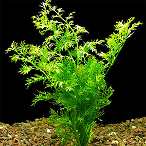
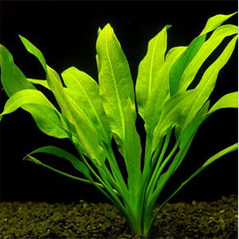

Bienvenido a nuestra tienda, Podra adquirir variedad en plantas de acuario, de la mejor calidad, y con el envio mas seguro.
Nombre: Valisneria
Esta planta, puede reproducirse de dos formas: por flores y estolones. Cuando las condiciones son propicias para la vallisneria, genera flores, cuyos tallos largos llegan a la superficie y emergen. Pero como norma general se reproducirán en el 90% de las veces es mediante estolones.
Precio: $250
Nombre: Helecho de java
El helecho de Java es muy fácil de reproducir. Puedes arrancar una parte del rizoma y volver a fijarlo a un objeto del acuario o esperar hasta que la planta madre forme plantas hijas. Las plantas hijas se reconocen por los esquejes que se forman en las puntas de las hojas.
Precio: $270
Nombre: Cabomba
La Cabomba caroliniana procede de América Central. Es una planta de tallos que puede alcanzar hasta los 80 cm. En acuarios su desarrollo no será superior a los 30 o 40 cm. Su tallo se presenta largo y fino con hojas también finas repartidas por todo lo largo de su extensión. Sus hojas de color verde intenso la convierten en una planta muy atractiva para el acuario.
Precio: $310
Nombre: Elodea
Se usa en acuariofilia, para oxigenar estanques y acuarios. Ocupa masas de agua de temperaturas moderadas y limpias, de pH neutro y bien iluminadas. El factor limitante es la temperatura.
Precio: $240
Nombre: Potus de agua
El potus es una planta tropical que se adapta muy bien al interior de casa y al hidrocultivo. Solo hay que introducir el extremo de un tallo en agua y en pocas semanas comenzará a producir raíces. Poco después, crecerán nuevas hojas y el tallo se irá alargando.
Precio: $210
Nombre: Camalote
Al bloquear el paso de la luz, limita el crecimiento de otras plantas acuáticas y algas, además de detener o dificultar la circulación del agua. Reducen la temperatura del agua, toman sus nutrientes y pueden llegar a consumir el oxígeno de la misma.
Precio: $230
Nombre: Salvinia natans
pequeñas, flotantes con tallos trepadores, ramificados, pilosos sin ser verdaderas raíces. Las hojas de a 3, con 2 verdes, sésiles o córtamente pecioladas, achatadas, enteras, flotantes, 1 hoja finamente diseccionada, peciolada, parecida a una raíz, y pendiente. Las hojas sumergidas tienen soros que están rodeados por membranas basifijadas indusia
Precio: $330
Nombre: Helecho de sumatra
Dada su forma, esta planta es a veces confundida con una planta de otra familia: Hygrophila difformis, conocida comúnmente como “Sinema”. La diferencia principal es que las hojas en C. Thalictroides nacen de la base y aunque algunas de ellas lleguen a parecer tallos en plantas desarrolladas, parecerían varios tallos; mientras que en H.
Precio: $360
Nombre: Lirio de agua
es una planta que pertenece a la familia de las Aráceas y es originaria de Sudáfrica, más precisamente de la región del Cabo. Su nombre científico es Zantedeschia aethiopica y, además de los nombres anteriores, en algunos lugares también es conocida como Alcatraz, Aro de Etiopía y Cartucho.
Precio: $400
Nombre: Hygrophila polysperma
Está dentro de las plantas de acuario más resistentes y se origina del sudeste asiático. El tallo es de 25-40 cm y 4-8 cm de ancho. Es una planta particularmente buena para los principiantes, ya que crece en casi todas las condiciones. Por lo general, crece tan rápido que es importante realizar podas constantes para que no tape otras plantas.
Precio: $285

Nombre: Sagitaria subulata
Conocida como sagittaria enana es una planta tapizante de crecimiento rápido y fácil mantenimiento. Es similar a las Echinodorus tenellus con hojas mas grandes, pero la sagittaria puede crecer en acuarios con iluminación mas moderada y sin adición de Co2. Definitivamente una planta apta para casi cualquier acuario, permitiendo tapizar todo el frente sin espacios libres.
Precio: $350
Nombre: Echinodorus
Las Echinodorus forman un grupo de plantas de grandes dimensiones que se emplean para personalizar zonas determinadas del acuario debido a su gran porte. No se colocan formando grupos ya que además de por su tamaño compiten entre ellas por los nutrientes. Por lo general ocupan el plano medio del acuario no empleándose como plantas de fondo a pesar de su porte.
Precio: $450
